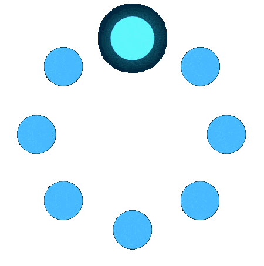

Загрузка


Здесь нужна какая либо информация о Вас
Кто я? Пришло время, когда я готова ответить на этот вопрос. К 35-ти годам у меня было высшее юридическое образование, но я не юрист. Работа в министерстве внутренних дел, так и не сделала меня офицером. Стопка сертификатов, дипломов, стажировок в сфере красоты, не сделали меня визажистом-стилистом, парикмахером, мастером маникюра. Есть и другие профессии, в которых меня нет… Так кто же я? Я – практик консультант фен-шуй системы Летящих звезд, Бацзы, восточной нумерологии и нумерологии таро. Я обучалась у многих мастеров и их последователей. Целью этих практик является гармоничная организация не только пространства, но и внутреннего состояния человека. А еще я - регресслог. Обучение в школе регрессий Алексея Кройтора позволило мне получить не только теорию, но и большую практику в этой области. Уже в процессе обучения регрессиям я решила те вопросы, которые были значимы для меня и оставались пока загадкой. Прорабатывая в регрессиях проблемы, я смогла трансформировать их в задачи и найти их решение. Отношения с родителями перестали меня так волновать при этом я не стала безразличной. Лишь однажды пережив опыт безусловной любви к родителям в регрессии, я по-настоящему поняла их и стала чувствовать к ним ту самую безусловную любовь не за что-то, а просто так. После нескольких регрессий, я наконец отпустила сильное чувство контроля по отношению к своим детям и это высвободило массу моей энергии, я перестала их плющить по поводу и без. И дети стали более свободными в проявлении себя. И сейчас я наслаждаюсь проявлениями творческих порывов детей, не критикуя и не заставляя их делать по-моему. Теперь регрессии я сделала основным инструментом своей работы. Видя какие результаты она дает я каждый раз отправляюсь в это удивительное путешествие вместе с кем-то. Кто я? Пришло время, когда я готова ответить на этот вопрос. К 35-ти годам у меня было высшее юридическое образование, но я не юрист. Работа в министерстве внутренних дел, так и не сделала меня офицером. Стопка сертификатов, дипломов, стажировок в сфере красоты, не сделали меня визажистом-стилистом, парикмахером, мастером маникюра. Есть и другие профессии, в которых меня нет… Так кто же я? Я – практик консультант фен-шуй системы Летящих звезд, Бацзы, восточной нумерологии и нумерологии таро. Я обучалась у многих мастеров и их последователей. Целью этих практик является гармоничная организация не только пространства, но и внутреннего состояния человека. А еще я - регресслог. Обучение в школе регрессий Алексея Кройтора позволило мне получить не только теорию, но и большую практику в этой области. Уже в процессе обучения регрессиям я решила те вопросы, которые были значимы для меня и оставались пока загадкой. Прорабатывая в регрессиях проблемы, я смогла трансформировать их в задачи и найти их решение. Отношения с родителями перестали меня так волновать при этом я не стала безразличной. Лишь однажды пережив опыт безусловной любви к родителям в регрессии, я по-настоящему поняла их и стала чувствовать к ним ту самую безусловную любовь не за что-то, а просто так. После нескольких регрессий, я наконец отпустила сильное чувство контроля по отношению к своим детям и это высвободило массу моей энергии, я перестала их плющить по поводу и без. И дети стали более свободными в проявлении себя. И сейчас я наслаждаюсь проявлениями творческих порывов детей, не критикуя и не заставляя их делать по-моему. Теперь регрессии я сделала основным инструментом своей работы. Видя какие результаты она дает я каждый раз отправляюсь в это удивительное путешествие вместе с кем-то.
Информация по МАК
Здесь нужна какая либо информация

Информация по Регрессии
Здесь нужна какая либо информация
Статья №2
ИнформацияСтатья №3
ИнформацияСтатья №4
ИнформацияСтатья №5
ИнформацияСтатья №6
ИнформацияВсё о метафорических картах и регрессиях
Информация id278093970
id278093970


2Ольги
 Написать нам
Написать нам